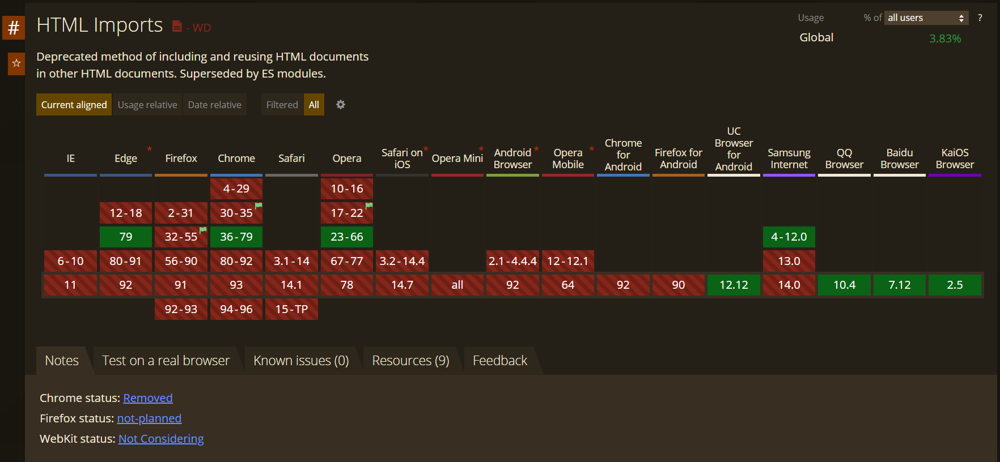

一些更新
更新文章比我预想的要慢，倒不是因为没东西可写，而是我担心写的东西太多导致之后更改博客的工作量大幅上升。现在这个博客还是有很多东西需要做。
简而言之，我花了点时间用php把页面共用的部分抽象了出来。一开始我其实是想要用Web Components的，也就是声明一个单独的模板文件后再在页面内引用。中途还遇到一个在模板内引用外部css文件的问题。总之，当各种东西弄得差不多了以后，我却发现HTML Imports已经不再被支持了。如果想要引用外部模板的话似乎只能引用外部js。

但这就带来了一个问题：如果我只是想引用js代码，那确实可以使用module。但是如果引用的是HTML模板的话，我就不得不用js一个个的创建DOM元素。如果这个模板比较复杂，那么代码将会非常的啰嗦，至少我个人并不是很想这么干。我也不想简单粗暴的把HTML代码直接当成字符串变量来处理。所以目前只能先这个样子了。如果我想到了其他的解决办法再说吧。